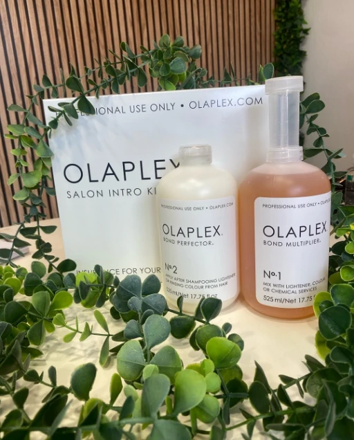

Coloración sin amoniaco
Tonos personalizados y atención a tu base natural.
Conocer másCabello con identidad
Un corte que te representa. Un color que ilumina. Una melena que apetece tocar. Empezamos escuchándote y diseñamos el cuidado alrededor de ti.
BELLEZA CON RAÍCES · EL SAUZAL
Nuestra forma de hacerlo
«Tu pelo no es uno más.»

Cabello con identidad
La conversación es el principio de un buen resultado. Nos cuentas qué te gusta de tu cabello, qué te cuesta en casa y qué cambio tienes en mente. Observamos la textura, el estado de la fibra y los trabajos anteriores antes de proponerte un servicio.
No hace falta que llegues con una idea cerrada. Puedes traer referencias o simplemente contarnos cómo quieres sentirte. Te ayudamos a encontrar un estilo que encaje con tu rostro, tu movimiento y el tiempo que quieres dedicarle.
Buscamos una forma que funcione también cuando sales del salón: líneas definidas, capas con movimiento o un cambio más marcado. El largo, la densidad y tu forma habitual de peinarte nos ayudan a decidir.
El acabado completa el corte. Podemos trabajar una melena pulida, una onda suave o un peinado con textura, y explicarte cómo mantenerlo con una rutina sencilla.

Cabello con identidad
El cabello puede cambiar con el color, el calor y los hábitos diarios. Elegimos el cuidado en función de lo que observamos, con atención a medios, puntas y cuero cabelludo.
La hidratación y la nutrición no son una receta única: adaptamos el protocolo y te orientamos sobre el mantenimiento. Si buscas controlar el encrespamiento, valoramos contigo las opciones de keratina.
Antes de terminar, te explicamos qué necesita tu cabello en los siguientes lavados, cómo aplicar el producto y qué gestos conviene ajustar.
Trabajamos con líneas profesionales que puedes conocer en el salón. La elección de champú, mascarilla o acabado depende de tu cabello y del servicio realizado, no de añadir pasos innecesarios.
Hecho en AURA
Sin dudas, sin prisas
Si hay algo más que quieras saber,
estamos al otro lado.
Sí. El asesoramiento forma parte de nuestra forma de trabajar. Cuéntanos qué buscas y cómo te peinas habitualmente; las referencias visuales también ayudan.
AURA es un salón unisex. Al pedir cita, indica quién viene y qué servicio necesita para organizar el tiempo de atención.
Te orientamos por WhatsApp y concretamos el presupuesto según el largo, la cantidad de cabello y el trabajo que acordemos. Consulta el importe antes de empezar.
Te recomendamos pedir cita para poder dedicarte el tiempo que necesitas. La disponibilidad la confirma el equipo por WhatsApp o teléfono.
Hay un momento que es solo tuyo
Cuéntanos qué necesitas. Nosotras ponemos
el tiempo, las manos y el cuidado.